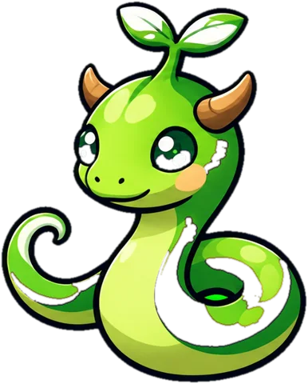

 GrassDragon
GrassDragonTap a stage to read its story.
Sproutym is a small, bright green snake with a rounded head, cheerful teal eyes, and two tiny leaf-like hornlets sprouting from its brow. It coils neatly on warm volcanic stones at the Lava Crater's edge, the hornlets trembling slightly in the heat shimmer. Despite living in such an unlikely place for a grass-type, it has claimed a particular cooled lava shelf where a seam of mineral-rich water keeps a thin film of living moss alive - its personal garden, which it defends with surprisingly vigorous hissing for its size.
Field note: Sproutym's hornlets stand perfectly erect for exactly forty seconds after it drinks - researchers have no explanation for the timing.
Lava Crater. Sproutym and its family are found in the Lava Crater. See everyone who lives there.
Share a Bond Food that matches its types to become friends. Sproutym loves:
A Bond Food is not a trick. It joins your spirit with the Kimuro's spirit, and only when it chooses you.
Print the Kimuro adventure packs: mazes, cards, a board game and Bond Mark medals.
See the printable packs